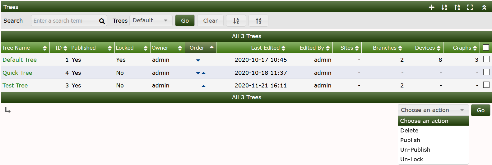
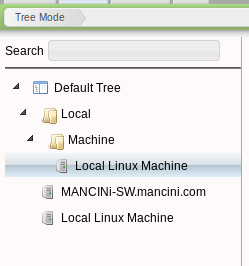
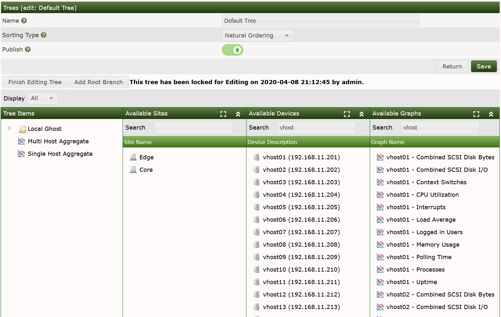
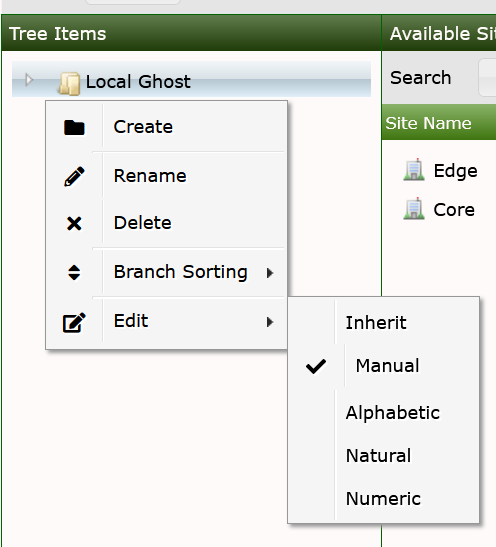

A Tree can be thought of as a hierarchical way of organizing your graphs. Each Tree consists of zero or more branches that contain leaf nodes such as Graphs, Devices and Sites. It's a very powerful way of organizing your Graphs.
Below we can see the current Trees we have setup on our Cacti server. To get to this screen click Console > Management > Trees.
From this page you can add or remove Trees as required.

Below is how a Tree is displayed in Graph View. We can see the Device that is being monitored - clicking on this Device will result in seeing all of the Graph data generated for the Device.

To create a new tree simply click the Add button (+) on the top right hand corner and enter a name for your Tree. After the tree has been created you will see the below page where you are able to add Devices to the Tree.

To add devices to the new tree simply drag an available device to the tree and it will be added to the tree. Cacti currently supports four Sort Types, which can be either inherited, of left to the author to define inheritance and at what level. See the image below for a visual representation of how Tree Sorting is accomplished.

| Field | Value | Description |
|---|---|---|
| Name | Name of the tree entry. | The sort order of all trees themselves is |
| always alphabetical | ||
| Sorting Type | Manual Ordering (No Sorting) | Y |
| ou may chance the sequence at your will | ||
| Alphabetical Ordering | 1, Ab, ab | All sub-trees are ordered alphabetically, |
| unless specifies otherwise (you may chance sort options at sub-tree label) | ||
| Natural Ordering | ab1, ab2, ab7, ab10, ab20 | N/A |
| Numeric Ordering | 01, 02, 4, 04 | Leading zeroes are not taken into account |
| when ordering numerically |
End users will not be able to view the Tree or it's Graphs until you publish it. To edit a Tree, you will be required to lock it for your use. The locking is designed to prevent multiple users from editing a Tree simultaneously.
When a Tree is locked, you can drag & drop the Sites, Devices and Graphs over to the Tree menu. To add a 'Root Branch', simply press the button to do so, once you have Root Branches, you may right click on the to create sub-branches on the Tree.
When you single click on a Site, the Devices, and Graphs associated with that Site should appear in their respective sections. You can also type into the Search fields above the various sections to drill into them. You can also shift-click and control-click on the objects within a section to drag & drop multiple objects at one time.
Don't forget to unlock your Tree before finishing your editing session.
Copyright (c) 2004-2024 The Cacti Group